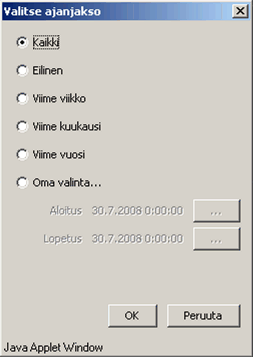

Jos 963 on tallentanut säätimen anturista keräämät tiedot, tallentuneet tiedot voidaan näyttää trendikäyränä.
Käyrän luominen tallentuneista tiedoista:
Siirry joko yhteenvetokäyrään tai tarkkuuskäyrään sille arvolle, jonka tiedot on tarkoitus toistaa.
Napsauta Tiedot-valikossa Lataa tallennettu data. Valitse ajanjakso -keskusteluruutu tulee näkyviin.

Napsauta haluamaasi vaihtoehtoa määrittääksesi ajanjakson toistettavia tietoja varten. Jos haluat määritellä tietyn päivän, napsauta Oma valinta... ja syötä jakson ensimmäinen ja viimeinen päivä napsauttamalla kenttien Aloitus ja Lopetus vieressä saadaksesi esiin tietojen syöttöruudun.
Napsauta OK. Trendikäyrä tulee näkyviin.
Voit zoomata käyrää sisään ja ulos, jotta tietojen tarkastelu on helpompaa. Käyrän tiedot voidaan näyttää pisteluettelona.
Huomaa, että tämä toiminto on käytettävissä vain kun olet yhteydessä 963 Serveriin graafisessa tilassa.